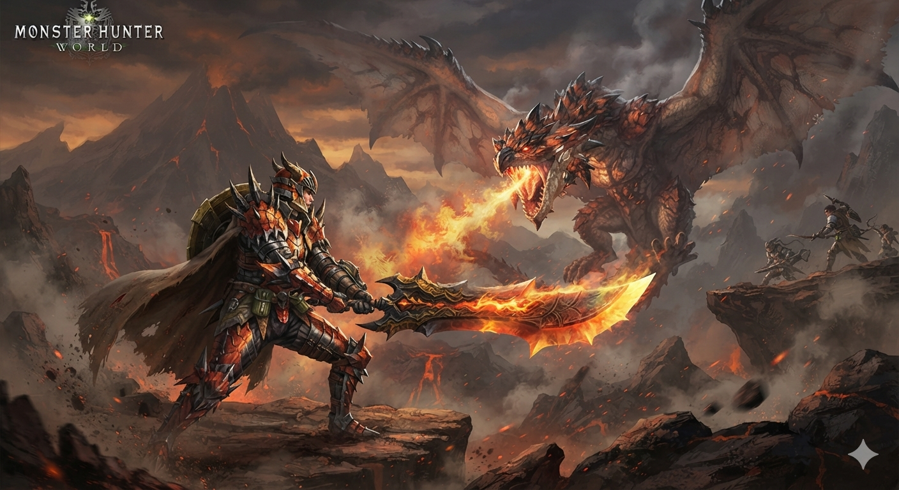
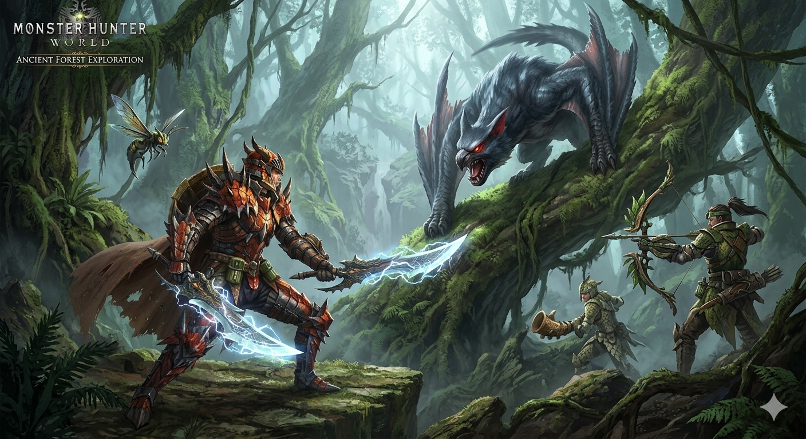

とある投資家の卵が、SBI証券という名の巨大な交易船に乗り込んだ。目的地は「資産形成の新大陸」。船長は「NISA」、航海士は「iDeCo」、そして船を守る精鋭たちが「投資信託」だ。
だが、この海は穏やかではない。荒波を立てるモンスターが待ち受ける。FXのモンスター、個別株の飛竜、そしてラスボス・レバレッジの魔王……。さあ、狩猟の始まりだ。
狩人よ、まずは「SBI証券 総合口座」を装備せよ。これはすべての武器のベースとなる。ログインすれば、ポートフォリオ画面で自分のHP（資産残高）を確認できる。
初心者は「投資信託」の片手剣から始めよう。低リスクで扱いやすい。
最初の獲物は「為替変動スライム」。こいつはユラユラと動き、時々円安方向に弾む。SBI証券のFX取引画面で「買い」注文を出すと、スライムにダメージを与えられる。
弱点は「経済指標」。特に米雇用統計の発表時だ。事前に予想を立て、指標が良ければスライムは弱る。だが油断するな、急に跳ね返ることもある。
狩りを続けると、税金という名の毒にやられる。そこで「NISA」の防具を身に着けよう。SBI証券ではつみたてNISAと一般NISAが選べる。年間120万円まで非課税だ。
この防具は一度装備すると、売却時も利益に税金がかからない。まさに伝説の防具。ただし、年間枠を超えると効果が薄れるので注意。
一人での狩りは危険だ。SBI証券には頼れるオトモ猫がいる。「SBI証券アプリ」だ。この猫は相場の監視、注文、入出金、そしてアラートまでこなす。
さらに「SBIラップ」という猫は、自動で最適なポートフォリオを組んでくれる。忙しい狩人にはありがたい。エサ（手数料）もほぼ無料だ。
次のエリアは「米国株の大平原」。広大で獲物が多い。SBI証券では米国株を1株から買える。手数料も業界最安レベルだ。
主な獲物は「GAFAM」と呼ばれる強敵たち。Apple、Microsoft、Amazon、Google、Meta。こいつらは成長力が高く、長期戦で大きなリターンをもたらす。
弱点は「決算発表」。事前に好決算を予想して仕込めば、大きく跳ねる。だが外れれば急落する。分散投資が鍵だ。
このページは挿絵の前置き。実際のドット絵は9ページ目にドーンと登場する。乞うご期待。
次は「個別株の飛竜」だ。このモンスターは企業の業績によって飛行パターンを変える。SBI証券の銘柄検索で、財務諸表を確認しよう。PER、PBR、ROEなどの武器が有効だ。
飛竜は時々「決算またぎ」で急降下する。だが、長期投資の槍で貫けば、いずれ上昇気流に乗る。日本株なら「配当金」という回復アイテムも落とす。
狩りでHPが減ったら「投資信託」の回復薬を使おう。特にSBI証券の「eMAXIS Slim」シリーズは、低コストで分散が効く。全世界株式（オール・カントリー）は万能薬だ。
毎月自動で購入する「積立」設定をすれば、勝手にHPが回復していく。まさに自動回復。忙しい狩人にぴったりだ。
新興国株は「密林」エリア。成長の果実が眠るが、毒虫も多い。SBI証券では「新興国株式ファンド」が買える。インド、ベトナム、ブラジルなどだ。
弱点は「政治リスク」と「為替」。だが、うまくハマれば大きなリターン。少額で分散投資するのがセオリー。
債券は「甲殻竜」。動きは鈍いが硬い。金利が上がると弱り、下がると強くなる。SBI証券では個人向け国債、社債、米国債が買える。
このモンスターは「インカムゲイン」を落とす。利子だ。特に米国債は利回りが高く、為替ヘッジなしなら円安でさらに旨味が増す。
だが、金利上昇には弱い。FRBの政策をよく見ておこう。
FXやCFDでは「レバレッジ」という大剣が使える。SBI証券のFXは最大25倍。小さな資金で大きな獲物を狙えるが、反動も大きい。
初心者はレバレッジ1倍から始め、慣れたら3倍、5倍と上げていこう。決してフルレバレッジで突っ込まないこと。即死する。
金、銀、原油などのコモディティは「火山」エリア。熱いが美味しい。SBI証券では「商品CFD」や「金ETF」で参加できる。
金は「安全資産」と呼ばれ、株安時に強い。原油は産油国の動向に左右される。どちらもボラティリティが高いので、上級者向けだ。
老後という名のラスボスに備えるなら、iDeCo（個人型確定拠出年金）が頼れる仲間だ。SBI証券はiDeCoのラインナップが豊富で、手数料も業界最安。
毎月の掛金は全額所得控除。運用益も非課税。そして受け取り時も控除がある。まさに三拍子揃った仲間。ただし60歳まで引き出せないので、長期的な視点が必要。
REIT（不動産投資信託）は「古龍」級のモンスター。SBI証券では国内REIT、米国REIT、J-REITが買える。分配金という回復アイテムを定期的に落とす。
金利に敏感で、急上昇すると弱体化する。だが、長期では安定した収益をもたらす。ポートフォリオの10〜20%程度が目安。
IPO（新規公開株）は「秘薬」のようなもの。当たれば初値で大きく上がることがある。SBI証券はIPOの取扱数が多く、抽選に参加しやすい。
だが、外れることも多い。当たっても初値が公開価格を下回ることもある。過度な期待は禁物。あくまでおまけとして捉えよう。
信用取引は「悪魔」だ。大きな力を得られるが、魂（担保）を取られる。SBI証券の信用取引は金利が比較的低いが、それでもリスクは高い。
初心者は手を出さない方が無難。どうしても使うなら、建玉は少額に。そして逆指値を必ず入れる。悪魔に飲み込まれたら終わりだ。
暗号資産は「幻獣」。SBI証券では直接買えないが、関連ETFやファンドで間接的に触れられる。だが、ボラティリティは極めて高い。
狩るなら余剰資金の1%以内。そして「長期保有」が鉄則。短期売買は火傷する。
ここまでで様々な武器を手に入れた。次は「ポートフォリオの鎧」を鍛えよう。SBI証券の「資産管理」画面で、円グラフを確認。偏りすぎていないかチェックだ。
基本は「株式6：債券3：その他1」。年齢やリスク許容度で調整しよう。リバランスは年に1回程度で十分。
ついにラスボス「レバレッジの魔王」が姿を現した。こいつはFXやCFDのハイレバレッジを操り、狩人を一瞬で破産させる。SBI証券でも最大25倍だが、魔王はさらに上を行く。
魔王の弱点は「規律」と「資金管理」。決して欲張らず、損切りを徹底する。そして長期的な視点を持つこと。魔王は短気な狩人を好むのだ。
いよいよ最終決戦。魔王のHPは膨大だが、攻撃パターンは決まっている。「急騰」「急落」「レンジ」。それぞれに対応する武器を選べ。
そして、魔王が放つ「恐怖」と「欲望」のブレスを耐え抜け。SBI証券の強みは、低コストと豊富な情報。それを信じ、淡々と戦うのだ。
魔王を倒す鍵は「時間」だ。複利という名の毒は、長期間かけて魔王を蝕む。毎月積立、NISA、iDeCo。これらを組み合わせれば、魔王は必ず倒れる。
そして、勝利の報酬は「経済的自由」。好きな時に好きな場所で暮らせる。それが本当の勝利だ。
魔王を倒した狩人は、新たな目標を見つける。それは「資産を守り、育て、次世代へ繋ぐ」こと。SBI証券はそのパートナーであり続ける。
海は広い。まだ見ぬモンスターもいるだろう。だが、装備と仲間が揃っていれば怖くない。さあ、次のクエストへ。
狩りの効率を上げるには、手数料を抑えることが重要。SBI証券は「ゼロ革命」を掲げ、多くの手数料を無料化している。
これらを活用しない手はない。
1月：NISA口座開設。つみたてNISAで毎月3万円積立開始。
4月：米国株デビュー。Appleを1株購入。ドキドキ。
7月：FXで円安スライムを狩る。+5万円。
10月：iDeCo加入。節税効果に感動。
12月：ポートフォリオ確認。+15%のリターン。魔王の影はまだ遠い。
金利の巨人は、債券やREITに影響を与える。FRBや日銀の政策で動く。SBI証券の経済ニュースをチェックしよう。
巨人が動くと、市場全体が揺れる。だが、長期投資家にとってはチャンスでもある。安く仕込めるからだ。
全世界株式（オール・カントリー）は「大海原」。SBI証券のeMAXIS Slim全世界株式は、これ一本で世界中に分散できる。まさに万能。
これに乗り遅れることはない。いつでも始められる。そして放置するだけで、世界経済の成長を享受できる。
iDeCoは「重鎧」だ。動きは鈍るが、防御力は絶大。掛金が全額所得控除、運用益非課税、受取時も控除。まさに鉄壁。
ただし、60歳まで脱げない。その覚悟を持って装備しよう。
魔王が倒れたと思ったら、第二形態「暴落の竜」が現れた。2020年のコロナショック、2008年のリーマンショックのような暴落だ。
この竜は突然襲来し、市場を恐怖に陥れる。だが、歴史は証明している。暴落の後には必ず回復が来る。SBI証券のデータを見れば一目瞭然だ。
恐怖で売るのが一番の愚策。むしろ、暴落は買いのチャンス。余裕資金で拾おう。
勝利とは、単に利益を上げることではない。経済的自由を手に入れ、心の平穏を得ること。そして、家族や社会に貢献すること。
SBI証券はそのための道具だ。使いこなせば、強力な武器になる。さあ、あなたも狩りに出かけよう。
SBI証券には「SBIポイント」や「ベネフィットステーション」など、知る人ぞ知る特典がある。これらを活用すれば、手数料の支払いでポイントが貯まる。
また、「SBIラップ」や「SBI新生銀行」との連携で、さらに効率が上がる。まさに裏技。
すべてのモンスターを狩り終えた狩人よ。あなたの資産は成長し、心は豊かになった。だが、狩りは終わらない。人生は続く。
次は「相続」や「寄付」という新たなクエストが待っている。SBI証券はその先もサポートする。さあ、胸を張って進もう。
この本はフィクションですが、SBI証券の機能や投資の基本は事実に基づいています。投資は自己責任ですが、正しい知識と規律があれば、勝利に近づけます。
モンスターハンターのように、楽しみながら学んでください。そして、自分のペースで狩りを続けてください。
― 投資狩猟記 著者一同 ―
NISA：少額投資非課税制度。年間120万円まで非課税。
iDeCo：個人型確定拠出年金。掛金所得控除、運用益非課税。
レバレッジ：てこの原理。少ない資金で大きな取引。
損切り：損失を確定させること。勇気が必要。
積立：毎月定額を購入。ドルコスト平均法。
